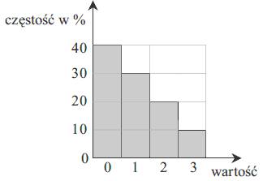
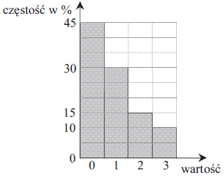

Matura podstawowa z matematyki - kurs - statystyka
Średnia arytmetyczna dziesięciu liczb
\(x, 3, 1, 4, 1, 5, 1, 4,
1, 5\) jest równa \(3\). Wtedy
A.\( x=2 \)
B.\( x=3 \)
C.\( x=4 \)
D.\( x=5 \)
D
Średnia arytmetyczna sześciu liczb:
\(3, 1, 1, 0, x, 2\)
jest równa \(2\). Wtedy liczba \(x\) jest równa
A.\( 3 \)
B.\( 4 \)
C.\( 5 \)
D.\( 6 \)
C
Średnia arytmetyczna liczb: \(3, 1, 1, 0, x, 0\) jest
równa \(2\). Oblicz \(x\).
\(x=7\)
Średnia wieku w pewnej grupie studentów jest równa \(23\) lata. Średnia wieku tych
studentów i ich opiekuna jest równa \(24\) lata. Opiekun ma \(39\) lat. Oblicz, ilu studentów jest w
tej grupie.
\(15\)
Średnia arytmetyczna cen sześciu akcji na giełdzie jest równa \( 500 \) zł. Za pięć
z tych akcji zapłacono \( 2300 \) zł. Cena szóstej akcji jest równa
A.\(400 \) zł
B.\(500 \) zł
C.\(600 \) zł
D.\(700 \) zł
D
Tabela przedstawia zestawienie liczby błędów popełnionych przez zdających część
teoretyczną egzaminu na prawo jazdy.
| Liczba błędów |
\(0\) |
\(1\) |
\(2\) |
\(x\) |
| Liczba zdających |
\(8\) |
\(4\) |
\(10\) |
\(8\) |
Średnia arytmetyczna liczby tych błędów popełnionych przez jednego zdającego jest równa
\(1{,}6\). Wynika stąd, że
A.\( x=3 \)
B.\( x=4 \)
C.\( x=5 \)
D.\( x=6 \)
A
Średnia arytmetyczna danych przedstawionych na diagramie częstości jest równa 
A.\( 1 \)
B.\( 1{,}2 \)
C.\( 1{,}5 \)
D.\( 1{,}8 \)
A
Oblicz średnią arytmetyczną danych przedstawionych na poniższym diagramie
częstości. 
\(\frac{9}{10}\)
W tabeli zestawiono oceny z matematyki uczniów klasy \(3A\) na koniec semestru.
| Ocena |
1 |
2 |
3 |
4 |
5 |
6 |
| Liczba ocen |
0 |
4 |
9 |
13 |
\(x\) |
1 |
Średnia arytmetyczna tych ocen jest równa \(3{,}6\). Oblicz liczbę \(x\) ocen bardzo
dobrych \((5)\) z matematyki wystawionych na koniec semestru w tej klasie.
\(x=3\)
Średnia arytmetyczna wszystkich liczb pierwszych z przedziału \( \langle 1; 13 ) \)
jest równa:
A.\(5{,}6 \)
B.\(\frac{29}{6} \)
C.\(\frac{41}{6} \)
D.\(6 \)
A
W kolejnych sześciu rzutach kostką otrzymano następujące wyniki:
\(6, 3, 1, 2, 5, 5\). Mediana tych wyników jest równa:
A.\( 3 \)
B.\( 3{,}5 \)
C.\( 4 \)
D.\( 5 \)
C
Oblicz medianę oraz średnią arytmetyczną danych: \(1, 2, 4, 7, 1\).
mediana: \(2\), średnia arytmetyczna: \(3\)
Mediana danych:
\(0, 1, 1, 2, 3, 1\) jest równa
A.\( 1 \)
B.\( 1{,}5 \)
C.\( 2 \)
D.\( 2{,}5 \)
A
Mediana danych:
\(-4, 2, 6, 0, 1\) jest równa
A.\( 6 \)
B.\( 0 \)
C.\( 2{,}5 \)
D.\( 1 \)
D
Oblicz medianę danych: \(0, 1, 3, 3, 1, 1, 2, 1\).
\(1\)
Wyniki sprawdzianu z matematyki przedstawione są w tabeli:
| Ocena |
1 |
2 |
3 |
4 |
5 |
6 |
| Liczba uczniów |
2 |
3 |
7 |
6 |
4 |
2 |
Mediana ocen ze sprawdzianu jest równa
A.\( 3{,}5 \)
B.\( 3 \)
C.\( 4 \)
D.\( 4{,}5 \)
A
Mediana danych przedstawionych w tabeli liczebności jest równa
| wartość |
\(0\) |
\(1\) |
\(2\) |
\(3\) |
| liczebność |
\(5\) |
\(2\) |
\(1\) |
\(1\) |
A.\( 0 \)
B.\( 0{,}5 \)
C.\( 1 \)
D.\( 5 \)
A
Oblicz medianę danych przedstawionych w postaci tabeli liczebności
| wartość |
\(0\) |
\(1\) |
\(2\) |
\(3\) |
| liczebność |
\(4\) |
\(3\) |
\(1\) |
\(1\) |
\(1\)
Pewna firma zatrudnia \(6\) osób. Dyrektor zarabia \(8000\) zł, a pensje
pozostałych pracowników są równe: \(2000\) zł, \(2800\) zł, \(3400\) zł,
\(3600\) zł, \(4200\) zł. Mediana zarobków tych \(6\) osób jest równa
A.\( 3400 \) zł
B.\( 3500 \) zł
C.\( 6000 \) zł
D.\( 7000 \) zł
B
Ciąg \((9, 18, x)\) jest geometryczny, a ciąg \((x, 30, y)\) jest
arytmetyczny.
Oblicz medianę liczb: \(10, x, y, 12, 12, 18, 30.\)
\(18\)
Mediana uporządkowanego niemalejąco zestawu sześciu liczb:
\(1,
2, 3, x, 5, 8\) jest równa \(4\). Wtedy
A.\( x=2 \)
B.\( x=3 \)
C.\( x=4 \)
D.\( x=5 \)
D
Mediana zestawu danych \( 2, 12, a, 10, 5, 3 \) jest równa \( 7 \). Wówczas
A.\(a=4 \)
B.\(a=6 \)
C.\(a=7 \)
D.\(a=9 \)
D
Średnia arytmetyczna liczb:
\( x,13,7,5,5,3,2,11 \) jest
równa \( 7 \). Mediana tego zestawu liczb jest równa
A.\(6 \)
B.\(7 \)
C.\(10 \)
D.\(5 \)
A
W pięciu kolejnych rzutach kostką do gry otrzymano następujące wyniki: \(6, 3, 5,
5, 6\). Odchylenie standardowe tych wyników jest równe
A.\( \frac{\sqrt{6}}{5} \)
B.\( \frac{\sqrt{30}}{5} \)
C.\( \frac{6}{5} \)
D.\(5\)
B